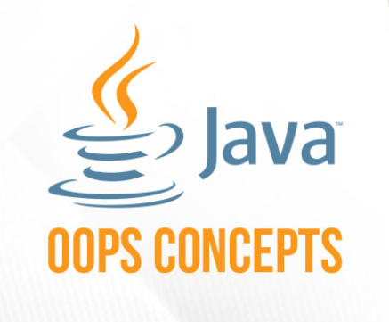

Mijn eerste ervaring met Java
Voordat ik met Java begon, had ik al ervaring met andere programmeertalen. Daardoor waren veel programmeerconcepten, zoals variabelen, functies en voorwaarden, niet helemaal nieuw voor mij. De overstap naar Java ging daarom vrij soepel.
Wat wel nieuw was, was de sterke focus op objectgeoriënteerd programmeren. Ik leerde...
